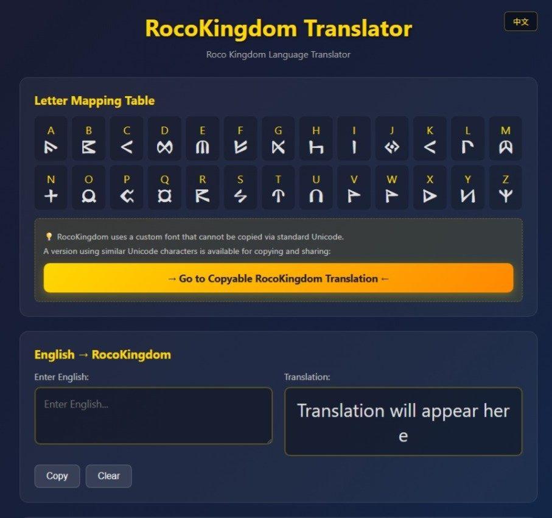
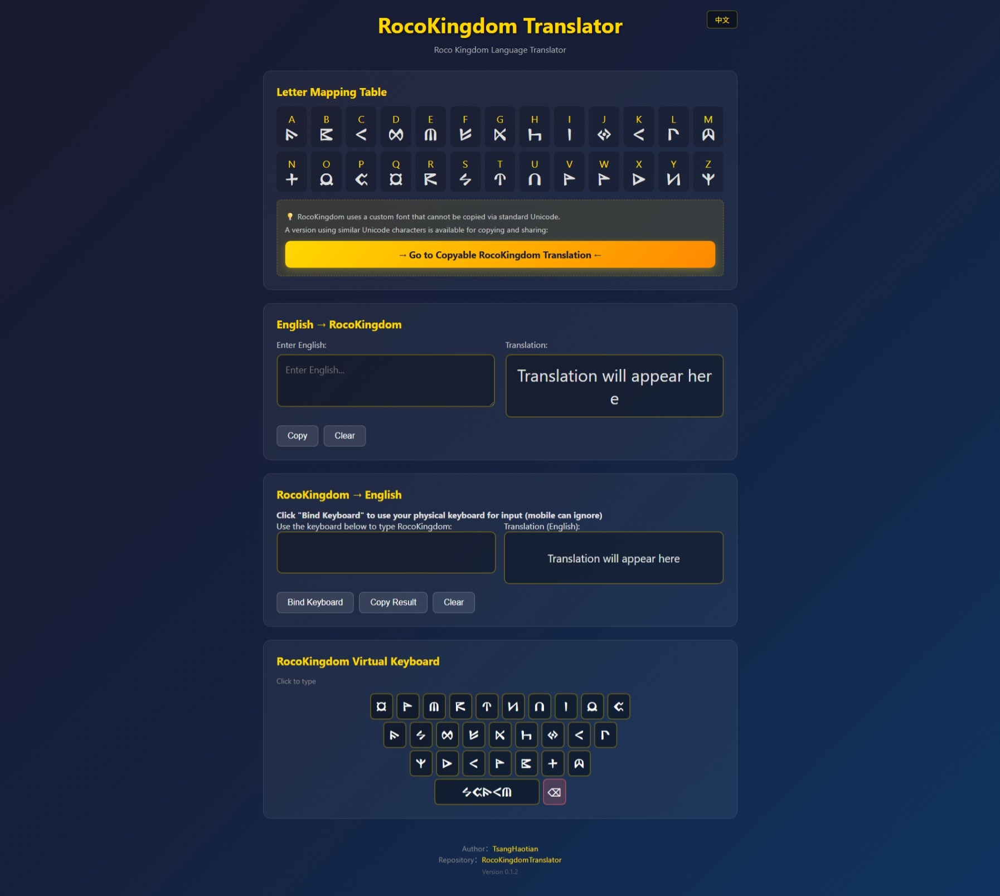
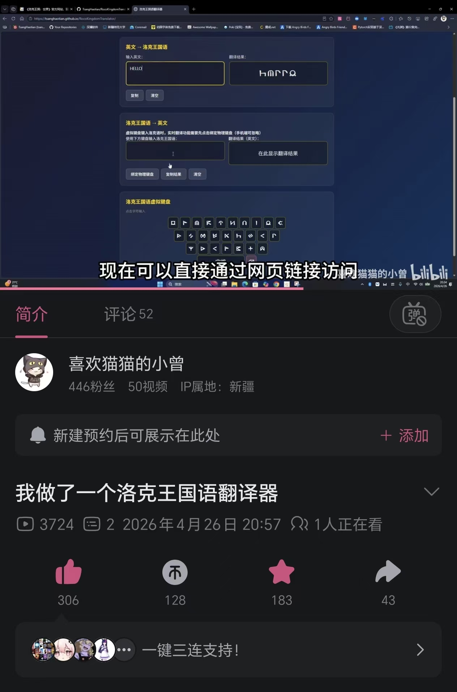

一个用于翻译英文与洛克王国语之间转换的在线工具
在《洛克王国世界》手游中，魔方工作室设计了一门独特的"洛克语"——形似英文，却另有规律，游戏内还配有专门的 TTF 字体文件。为了破解这门神秘语言，让玩家能自由阅读游戏世界中的文字，于是制作了这个翻译工具。
点击图片可放大查看

最开始做这个网页，是因为看到 B 站有位 UP 主在洛克王国官方找到了神秘洛克语的 TTF 字体文件。我用同样的方式也找到了这个文件，顺手做出了这个翻译网站。
发布到 B 站后给玩家社区免费使用，反响还不错——视频收获了不少点赞、收藏、投币和转发。虽然不算特别多，但毕竟我就是个小 UP 主，看到有人用自己做的工具，还是很开心的。这个网站就像个"手术刀项目"，一次做好就不用怎么维护，GitHub Pages 也不用花钱。

B 站视频数据：播放、点赞、收藏、投币、转发一览
不过中间也遇到了问题：很多小伙伴说没法把翻译结果复制粘贴给别人——因为 TTF 字体那套特殊符号复制出去就乱码了。这是个最大的困难。后来我发现洛克语是基于卢恩符文改造的，翻遍了 Word 的特殊字符，最终做出了第二个"可复制版本"的洛克语翻译。
其实 HTML、CSS、JS 这些技术早就学了，这个项目算是学以致用吧。项目本身没怎么维护了，但因为是发布太早，偶尔改出 bug 推送部署时还真有点紧张——生怕用户打不开网页，发现我这个草台班子把 bug 传上去了 😂